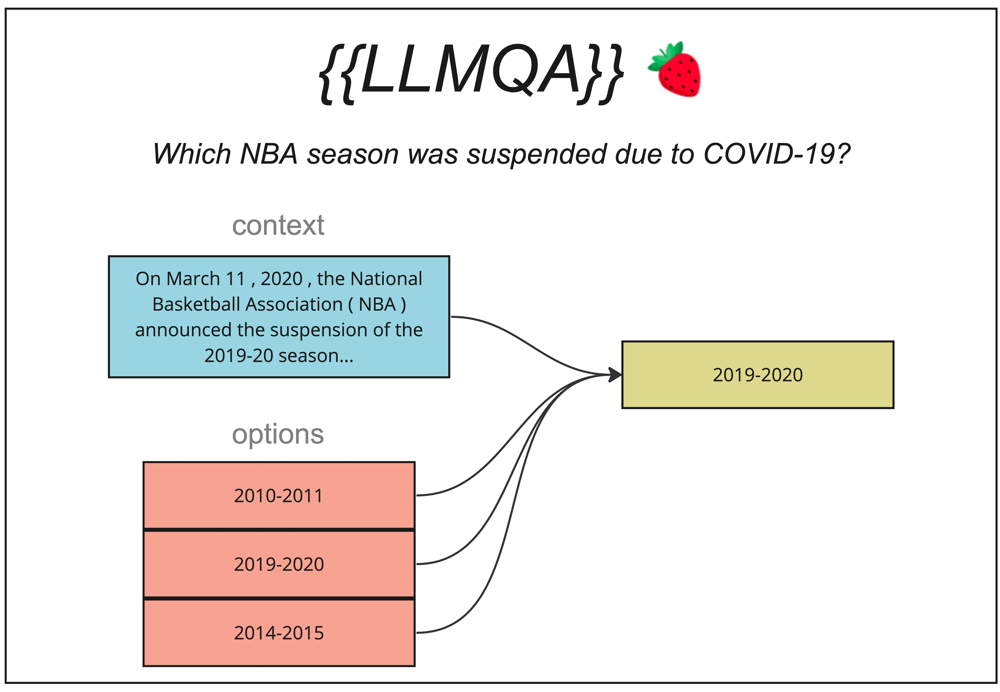

QAIngredient

Description
Sometimes, simply selecting data from a given database is not enough to sufficiently answer a user's question.
The QAIngredient is designed to return data of variable types, and is best used in cases when we either need:
1) Unstructured, free-text responses ("Give me a summary of all my spending in coffe")
2) Complex, unintuitive relationships extracted from table subsets ("How many consecutive days did I spend in coffee?")
3) Multi-hop reasoning from unstructured data, grounded in a structured schema (using the options arg)
Formally, this is an aggregate function which transforms a table subset into a single value.
The following query demonstrates usage of the builtin LLMQA ingredient.
{{
LLMQA(
'How many consecutive days did I buy stocks in Financials?',
(
SELECT account_history."Run Date", account_history.Symbol, constituents."Sector"
FROM account_history
LEFT JOIN constituents ON account_history.Symbol = constituents.Symbol
WHERE Sector = "Financials"
ORDER BY "Run Date" LIMIT 5
)
)
}}
Behind the scenes, we wrap the call to LLMQA in a trivial CASE clause, ensuring that the ingredient's output gets returned.
SELECT CASE WHEN FALSE THEN FALSE
WHEN TRUE then {{QAIngredient}}
END
| "Run Date" | Symbol | Sector |
|---|---|---|
| 2022-01-14 | HBAN | Financials |
| 2022-01-20 | AIG | Financials |
| 2022-01-24 | AIG | Financials |
| 2022-01-24 | NTRS | Financials |
| 2022-01-25 | HBAN | Financials |
From examining this table, we see that we bought stocks in the Financials sector 2 consecutive days (2022-01-24, and 2022-01-25).
The LLM answers the question in an end-to-end manner, returning the result 2.
The QAIngredient can be used as a standalone end-to-end QA tool, or as a component within a larger BlendSQL query.
For example, the BlendSQL query below translates to the valid (but rather confusing) question:
"Show me stocks in my portfolio, whose price is greater than the number of consecutive days I bought Financial stocks multiplied by 10. Only display those companies which offer a media streaming service."
SELECT Symbol, "Last Price" FROM portfolio WHERE "Last Price" > {{
LLMQA(
'How many consecutive days did I buy stocks in Financials?',
(
SELECT account_history."Run Date", account_history.Symbol, constituents."Sector"
FROM account_history
LEFT JOIN constituents ON account_history.Symbol = constituents.Symbol
WHERE Sector = "Financials"
ORDER BY "Run Date" LIMIT 5
)
)
}} * 10
AND {{LLMMap('Offers a media streaming service?', 'portfolio::Description')}} = 1
Constrained Decoding with options
Perhaps we want the answer to the above question in a different format. We call our LLM ingredient in a constrained setting by passing a options argument, where we provide either semicolon-separated options, or a reference to a column.
{{
LLMQA(
'How many consecutive days did I buy stocks in Financials?',
(
SELECT account_history."Run Date", account_history.Symbol, constituents."Sector"
FROM account_history
LEFT JOIN constituents ON account_history.Symbol = constituents.Symbol
WHERE Sector = "Financials"
ORDER BY "Run Date" LIMIT 5
)
options='one consecutive day!;two consecutive days!;three consecutive days!'
)
}}
Running the above BlendSQL query, we get the output two consecutive days!.
This options argument can also be a reference to a given column.
For example (from the HybridQA dataset):
SELECT capacity FROM w WHERE venue = {{
LLMQA(
'Which venue is named in honor of Juan Antonio Samaranch?',
(SELECT title, content FROM documents WHERE content MATCH 'venue'),
options='w::venue'
)
}}
Or, from our running example:
{{
LLMQA(
'Which did i buy the most?',
(
SELECT account_history."Run Date", account_history.Symbol, constituents."Sector"
FROM account_history
LEFT JOIN constituents ON account_history.Symbol = constituents.Symbol
WHERE Sector = "Financials"
ORDER BY "Run Date" LIMIT 5
)
options='account_history::Symbol'
)
}}
The above BlendSQL will yield the result AIG, since it appears in the Symbol column from account_history.
QAProgram
Bases: Program
Source code in blendsql/ingredients/builtin/llm/qa/main.py
10 11 12 13 14 15 16 17 18 19 20 21 22 23 24 25 26 27 28 29 30 31 32 33 34 35 36 37 38 39 40 | |
LLMQA
Bases: QAIngredient
Source code in blendsql/ingredients/builtin/llm/qa/main.py
43 44 45 46 47 48 49 50 51 52 53 54 55 56 57 58 59 60 61 62 63 64 65 66 67 | |